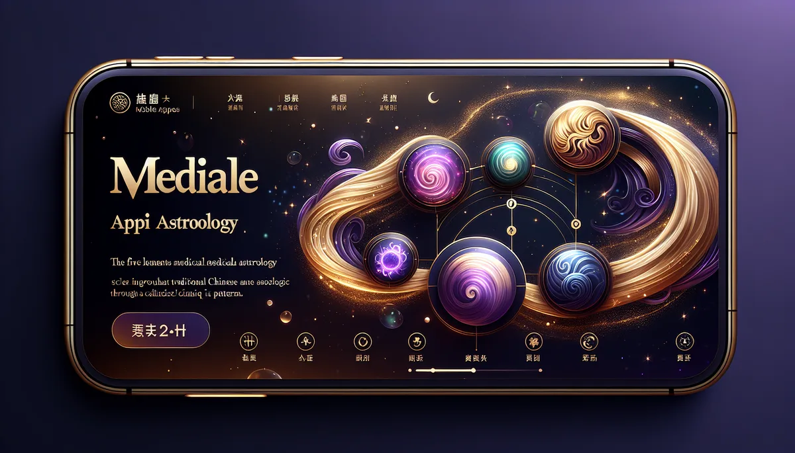

《黃帝內經》運氣學說：天干定五運，地支化六氣。輸入年份，看清這一年的氣候節奏和身體功課。
📜 源頭脈絡
五運六氣是中醫裡最像氣象學的一套系統。它不看個人命盤，看的是整個地球這一年的「氣候劇本」。用天干算五運（木火土金水的年度主旋律），用地支算六氣（風寒暑濕燥火在六個時段的分佈），然後推演這一年容易出什麼病、該怎麼養生。
從《黃帝內經》到王冰
五運六氣出自《黃帝內經·素問》的「運氣七篇大論」。但這七篇的來歷本身就是個謎。唐代醫學家王冰（約710-804年）在整理《素問》時，聲稱從他的老師張公秘藏的副本中找到了這七篇。學術界對這七篇到底是戰國時期的原文還是唐代的追補，至今沒有定論。但不管來源如何，這七篇建立了一個完整的「天人相應」數學模型。
宋代官方把運氣學說列為醫學考試的必考科目。朝廷甚至根據每年的運氣推算，提前配發預防藥方給各地。這大概是人類歷史上最早的「公共衛生預警系統」。
甲己化土、子午少陰
五運的口訣：甲己化土，乙庚化金，丙辛化水，丁壬化木，戊癸化火。陽干（甲丙戊庚壬）為太過，陰干（乙丁己辛癸）為不及。太過的年份那個五行能量偏強，不及則偏弱。
六氣的口訣：子午少陰君火，丑未太陰濕土，寅申少陽相火，卯酉陽明燥金，辰戌太陽寒水，巳亥厥陰風木。司天主上半年，在泉主下半年。主氣每年固定不變（厥陰→少陰→少陽→太陰→陽明→太陽），客氣隨年支輪轉。主客加臨產生的生克關係，決定了哪個時段容易出事。
2003年SARS爆發時，中醫界回溯推演發現該年（癸未年）運氣特徵和溫病高度吻合，引起現代流行病學界的關注。2020年新冠（庚子年）也有學者做了運氣分析，發現金運太過、燥氣偏盛的推演和呼吸道疾病的大流行存在某種對應關係。
五運六氣的核心假設是：天干地支的60年週期能映射地球氣候和疫病的循環規律。這個假設在現代科學中沒有被嚴格驗證，但也不是完全沒有根據。太陽活動有大約11年的週期（黑子週期），木星公轉週期約12年（接近一個地支週期），這些天文週期確實會影響地球氣候。
中國中醫科學院的研究團隊曾分析了1950-2010年的氣象數據，發現五運六氣對某些年份氣溫異常的預測確實高於隨機機率。但這類研究的統計方法和樣本量都還不夠嚴謹，學術界對此持謹慎態度。
老實說：五運六氣是一個宏觀框架，不是精準預報。它更像是提供一個「這一年大方向要注意什麼」的養生地圖，而不是告訴您「幾月幾號會生什麼病」。把它當成年度養生提醒來用，比當成醫療預測工具要實在得多。
五運六氣看的是天時，精油聞的是此刻。兩個時間尺度，一個身體。
火運太過的年份，心火容易亢。薰衣草的涼意像夏天午後突然吹進來的一陣穿堂風，不是滅火，是讓燒得太旺的竈降到可以好好煮飯的溫度。
濕土司天的上半年，脾胃容易罷工。薑精油的辛辣暖意像冬天早上第一口熱豆漿，不是治胃病，是提醒胃它還記得怎麼工作。
燥金在泉的下半年，皮膚和呼吸道最先抗議。尤加利的清冽像山上的空氣，不是潤燥，是讓肺記得什麼叫做「吸進去是舒服的」。
✦ 五運六氣給的是天氣預報，精油給的是今天出門該穿什麼。兩件事合在一起，才不會在大暑穿毛衣。